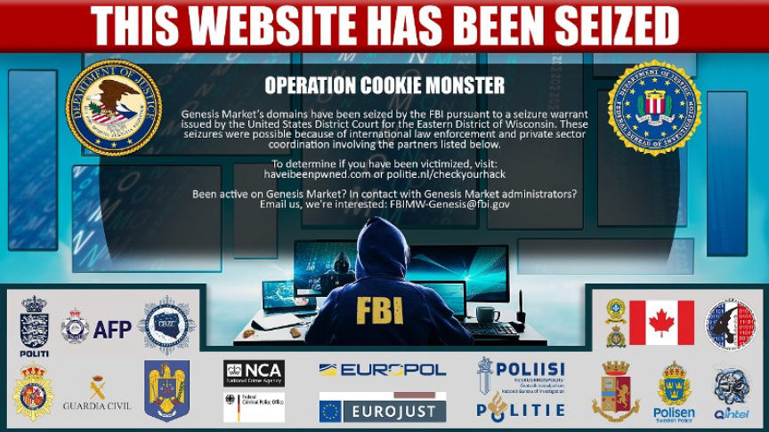
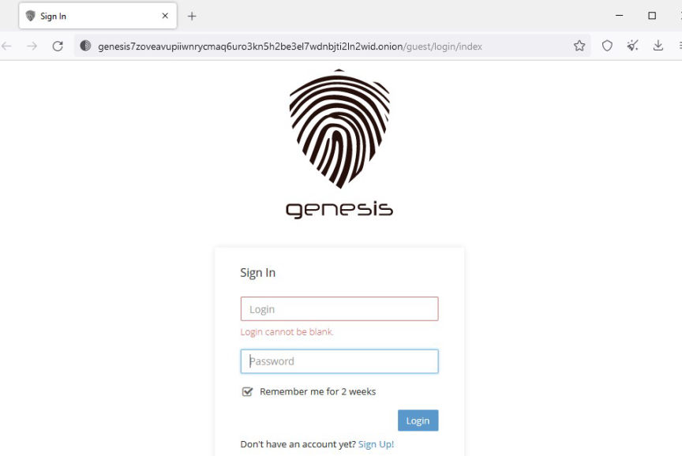
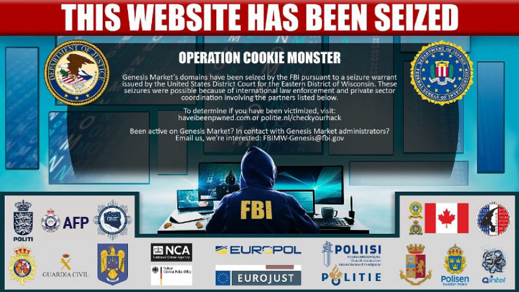
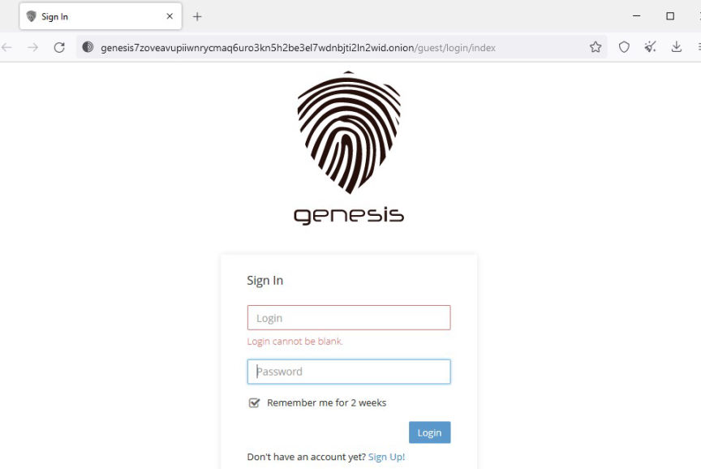

US Treasury Sanctions Genesis Market
The United States Treasury Department sanctioned Genesis Market as part of an international operation that resulted in the takedown of the market's clearnet domains and the arrest of over a hundred of its users.

According to reports by various law enforcement agencies, 17 countries participated in the multinational operation dupped "Operation Cookie Monster." Established in March 2018, Genesis is an invite-only store that sells packages of stolen account access credentials, simply referred to as 'bots' by the market's admins.
The application for the warrant to seize the market's domains revealed that the FBI launched investigations into Genesis Market in August 2018. In the course of the operation, the FBI investigators purchased 115 bots from the market and paid in Bitcoin.
Tracing the bitcoin eventually led the investigators to hosting services providers located in the US that provided hosting services to genesis.market. Information acquired from the hosting providers led the investigators to the market's backend server.

On December 9, 2020, the investigators obtained a "forensic image" of the server. The information acquired by the agents revealed that at the time the market had approximately 33,000 users, approximately 900,000 bots for sale, and that more than $4 million in crypto had been deposited into the market by its users.
The investigators also gained access to users' information such as usernames, passwords, email addresses, bitcoin addresses, and purchase history.
Shortly after the investigators had acquired the information, Genesis admins changed hosting providers and moved their servers out of the US.
The investigators once again gained access to the database associated with the markets server in May 2022. Information from the server revealed that the market's users had grown to 59,000 users, who had deposited more than $8 million in crypto, and that 1.5 million bots had been put up for sale.
On April 4, 2023, in an internationally coordinated operation, the investigators seized and took offline 11 clearnet domains associated with the market. The market's onion domain is still online.
At the same time law enforcement agencies in 17 countries executed search warrants at properties associated with the market's most 'prolific' users, identified from information acquired from the market's servers. Approximately 208 properties were searched resulting in the arrest of 119 suspects.
The U.S. Department of the Treasurys Office of Foreign Assets Control (OFAC) believes Genesis Market admins are located in Russia. The sanction against the market is attributed to the market's role in attacks by the market's users on the US financial sector, critical infrastructure, and federal, state, and local government agencies.

Seizure image of Genesis Market
According to reports by various law enforcement agencies, 17 countries participated in the multinational operation dupped "Operation Cookie Monster." Established in March 2018, Genesis is an invite-only store that sells packages of stolen account access credentials, simply referred to as 'bots' by the market's admins.
The application for the warrant to seize the market's domains revealed that the FBI launched investigations into Genesis Market in August 2018. In the course of the operation, the FBI investigators purchased 115 bots from the market and paid in Bitcoin.
Tracing the bitcoin eventually led the investigators to hosting services providers located in the US that provided hosting services to genesis.market. Information acquired from the hosting providers led the investigators to the market's backend server.

Login page of Genesis Market
On December 9, 2020, the investigators obtained a "forensic image" of the server. The information acquired by the agents revealed that at the time the market had approximately 33,000 users, approximately 900,000 bots for sale, and that more than $4 million in crypto had been deposited into the market by its users.
The investigators also gained access to users' information such as usernames, passwords, email addresses, bitcoin addresses, and purchase history.
Shortly after the investigators had acquired the information, Genesis admins changed hosting providers and moved their servers out of the US.
The investigators once again gained access to the database associated with the markets server in May 2022. Information from the server revealed that the market's users had grown to 59,000 users, who had deposited more than $8 million in crypto, and that 1.5 million bots had been put up for sale.
On April 4, 2023, in an internationally coordinated operation, the investigators seized and took offline 11 clearnet domains associated with the market. The market's onion domain is still online.
At the same time law enforcement agencies in 17 countries executed search warrants at properties associated with the market's most 'prolific' users, identified from information acquired from the market's servers. Approximately 208 properties were searched resulting in the arrest of 119 suspects.
The U.S. Department of the Treasurys Office of Foreign Assets Control (OFAC) believes Genesis Market admins are located in Russia. The sanction against the market is attributed to the market's role in attacks by the market's users on the US financial sector, critical infrastructure, and federal, state, and local government agencies.